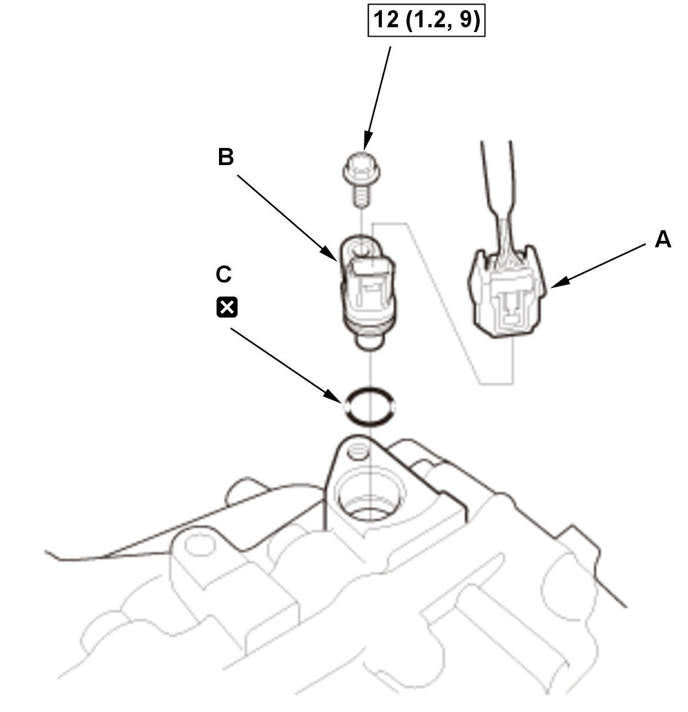
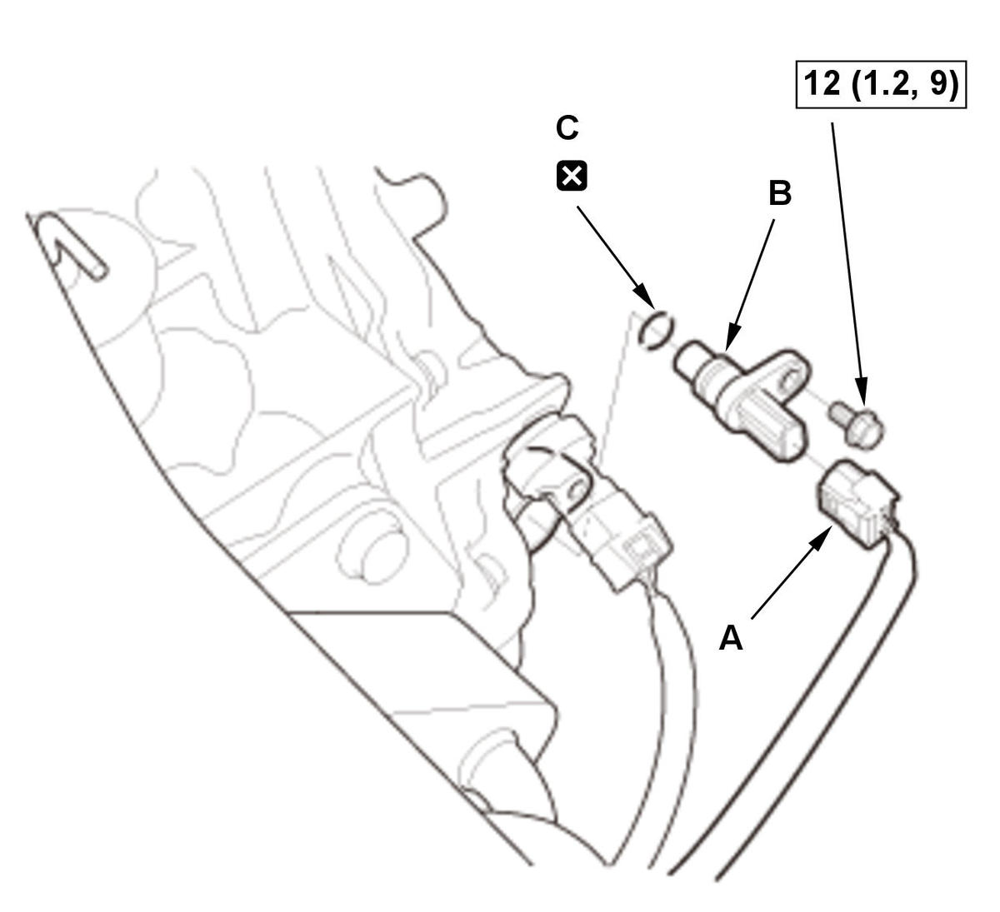
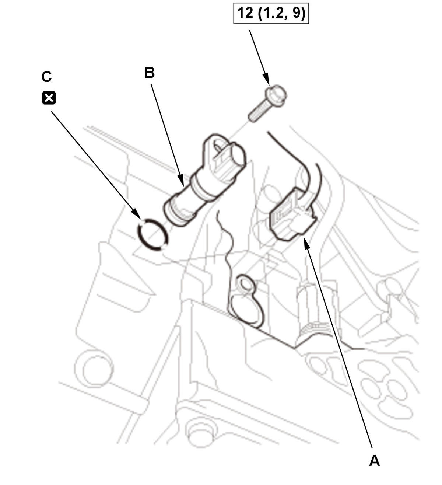

Removal and Installation
NOTE:
- How to read the torque specifications .
- Keep all foreign particles out of the transmission.
CVT Speed Sensor
- CVT Speed Sensor - Remove

Courtesy of HONDA, U.S.A., INC.1. Disconnect the connector (A). 2. Remove the CVT speed sensor (B) with the O-ring (C).
- All Removed Parts - Install
1. Install the parts in the reverse order of removal.
NOTE:- Be sure to use a new O-ring which should be applied a light coat of clean transmission fluid before installation.
- Check the connector for corrosion, dirt, or oil, and clean or repair if necessary.
CVT Drive Pulley Speed Sensor
- Air Cleaner - Remove
- CVT Drive Pulley Speed Sensor - RemoveFig 2: CVT Drive Pulley Speed Sensor Components With Torque Specifications (L15B7/L15BA/L15BY - CVT)

Courtesy of HONDA, U.S.A., INC.1. Disconnect the connector (A). 2. Remove the CVT drive pulley speed sensor (B) with the O-ring (C).
- All Removed Parts - Install
1. Install the parts in the reverse order of removal.
NOTE:- Be sure to use a new O-ring which should be applied a light coat of clean transmission fluid before installation.
- Check the connector for corrosion, dirt, or oil, and clean or repair if necessary.
Torque Converter Turbine Speed Sensor
- Vehicle - Lift
- Engine Undercover - Remove (Without Engine Undercover Lid)
- Engine Undercover Plate - Remove (With Engine Undercover Lid)
- Engine Undercover Lid - Remove (With Engine Undercover Lid)
- Torque Converter Turbine Speed Sensor - RemoveFig 3: Torque Converter Turbine Speed Sensor Components With Torque Specifications (L15B7/L15BA/L15BY - CVT)

Courtesy of HONDA, U.S.A., INC.1. Disconnect the connector (A). 2. Remove the torque converter turbine speed sensor (B) with the O-ring (C).
- All Removed Parts - Install
1. Install the parts in the reverse order of removal.
NOTE:- Be sure to use a new O-ring which should be applied a light coat of clean transmission fluid before installation.
- Check the connector for corrosion, dirt, or oil, and clean or repair if necessary.